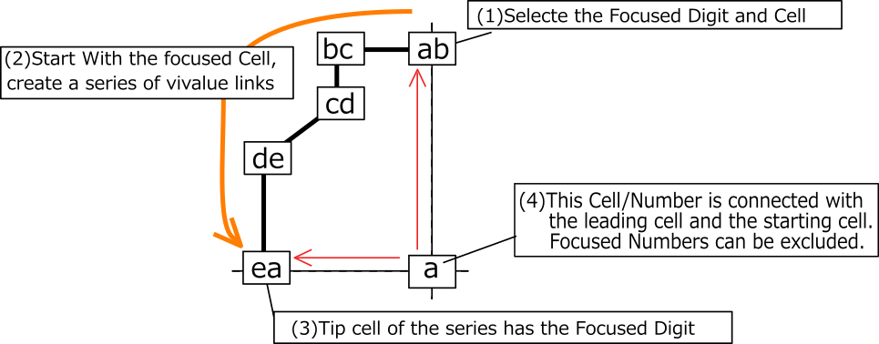
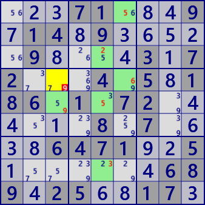

XY Chain
XY-Chain is an analysis algorithm using Locked which occurs in the concatenation of bivalues.
The following figure shows the image of XY-Chain.
Begin with bivalue's cell with a focused number a and concatenate bivalue cells.
In the image diagram, they are connected with different numbers, but the same number may appear.
It is assumed that a cell at the tip of a chain has the same number a as the starting cell.
Candidate number a can be excluded in the cell related to the starting cell / leading cell.

XY-Chain sample. Two series are overlapped in the right figure.
r7c4-r4c4-r4c5-r1c5
 XY Chain r4c3 #9 is false
r4c6-r1c6-r3c5-r8c5-r5c5-r5c3
.5....3...71.43...2..61...9..5....7.7.34..19.1...9.8..3.2.64.5........185.927.4..
...71...9.14.9.....9....3.72...4.5.186.1.72......8.7....6471..5.......689.25..17.